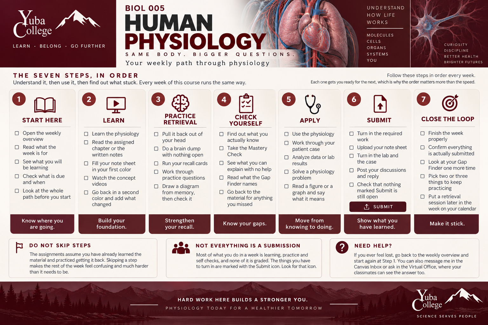

BIOL 005 Human Physiology: Your Weekly Path Through Physiology

Follow these steps in order every week. Each step prepares you for the next.
- Start Here. Open the weekly overview. Read what the week is for, see what you will be learning, check what is due and when, and look at the whole path before you start.
- Learn. Read the assigned chapter or written notes and fill in your note sheet in your first color. Watch the concept videos, then return in a second color and add what changed or became clearer.
- Practice Retrieval. With your materials closed, do a brain dump, run your recall cards, work through practice questions, and draw a diagram from memory before checking it.
- Check Yourself. Take the Mastery Check, determine what you can explain without help, review what the Gap Finder identifies, and return to the learning materials for anything you missed.
- Apply. Work through your patient case, analyze data or lab results, solve physiology problems, and interpret figures or graphs.
- Submit. Upload your note sheet, turn in the lab and patient case, post your discussions and replies, and confirm that nothing marked Submit is still open.
- Close the Loop. Confirm that everything is submitted, review your Gap Finder, choose two or three areas to keep practicing, and schedule retrieval practice later in the week. Continue cumulative retrieval of previous weeks until the midterm.
Do not skip steps. Assignments assume that you have already learned the material and practiced retrieving it. Skipping steps can make the rest of the week more confusing and difficult.
Not everything is a submission. Much of the week consists of learning, practice, and self-checks. Required submissions are identified with the Submit icon.
If you need help, return to the weekly overview and start again at Step 1. You can also use Canvas Inbox or the Virtual Office.